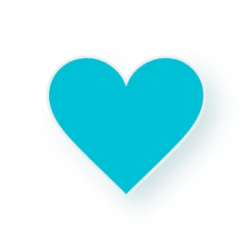
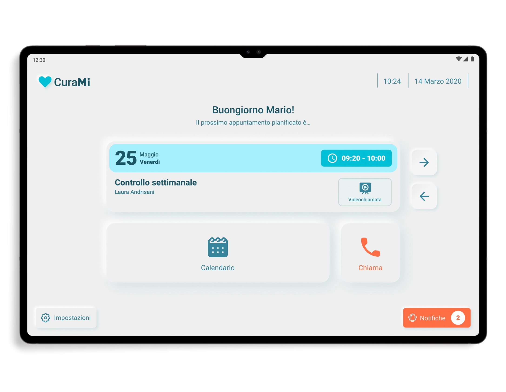
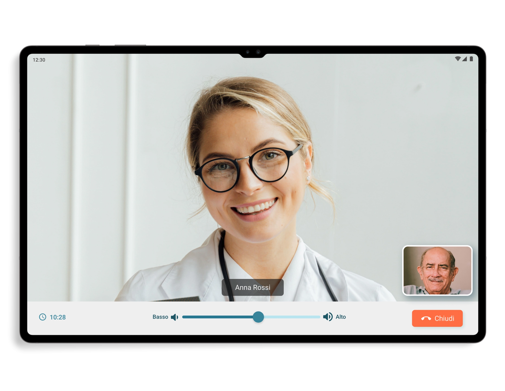

Realization period
Nov 2020 - Jan 2021
Clients
Amici Casa della Carità, Proges
Design toolkit
Adobe XD, Adobe Illustrator, Adobe Photoshop, Whimsical, User interview

Nov 2020 - Jan 2021
Amici Casa della Carità, Proges
Adobe XD, Adobe Illustrator, Adobe Photoshop, Whimsical, User interview
CuraMi is part of an innovative home care project for elderly people who are alone or in need. Is a digital platform through which direct contact is established and maintained between the elderly person and the care provider. The app is installed on a tablet which is given to the elderly person together with a SIM card, while the operators have another version of the app, usable from a smartphone, which allows the management of the agenda and assistance services.
During the COVID-19 pandemic, all the limitations and weaknesses of healthcare for the elderly have come to light. This is a problem that the "Amici Casa della Carità" association had to deal with, which decided to test a new method of telematic home care with one hundred over-65s residing in the neighborhoods of the north-eastern suburbs of Milan (Crescenzago, Adriano and via Padova). How can we improve care for the elderly and help care providers in their work?This is the main problem we worked on during this project.
I led the UX/UI design department together with my team leader as well as doing research for the analysis phase. I also worked closely with the developers especially regarding the User Interface phase, given the use of a new graphic style never used in previous company projects.
1x Project Manager
1x Software Analyst
2x UX/UI Designer
1x Full-stack Developer
1x Front-end Developer
The needs and requirements of the elderly and care providers were the fundamental points that CuraMi's objectives had to address during the design phase.
create a version of the app to assist the elderly in an extremely simple and intuitive way
think of a smartphone version for care providers to make their work and appointment management easier
generate very streamlined navigation with few but fundamental pages
create a dedicated UI specifically for seniors to meet their different interface reading needs
In the early stages of the project, the stakeholders showed us, during video calls, their ideas and objectives, especially the choice to create a version for tablets and one for smartphones, and providing us with everything useful they had in their hands and which then it would have been useful especially during the analysis part.
Among the first activities to which we dedicated ourselves, there was the phase of understanding and interviewing operators and those over 65, fundamental to creating a product that respected the KPIs defined at the start.
Not having a very large budget available for this project, I carried out tests with not many users. I limited myself to carrying out a mix of qualitative and quantitative tests on 4 elderly people and 4 care providers (all 8 belonging to the association in their own way). Also considering the tight deadlines, I prioritized the activities in a strategic way and created a journey map, shared with my work group, to highlight the most urgent areas to focus on.
Once the data was collected, I analyzed it, obtaining positive points and pain points, in order to understand where to direct the project and which features to integrate for the two types of end users..
Elderly people who usually use assistance apps have stated that these are indeed useful but not always intuitive and quick to use. The choice to focus more on some features rather than others is not always a good choice and this complicates interaction with the app and its understanding.
Result: the app for the elderly had to be extremely intuitive and equipped with a few but direct features, such as video calls and a minimal appointment calendar (especially from a conceptual point of view). These choices had to aim to lower the app's understanding curve.
Care providers have also highlighted the usefulness of these care apps, as they make their work easier by keeping track of their patients and appointments. However, not all apps keep up with the speed of their work due to superfluous time-wasting features and less than flawless communications systems.
Result: the care givers had to have a few but fundamental functions available, without too many frills, so as not to hinder them during their work. The app had to emphasize above all the appointment calendar, their main tool, and patient records with only a few other surrounding features, doing so would have made the final product very quick to use.
During the user interview, the elderly showed difficulty in using common smartphones and interacting with the graphic interfaces that many of us are accustomed to. This problem lies above all in their vision which is no longer as effective as it once was and therefore they struggle to distinguish elements and commands.
Result: provide elderly people with a version of the app, conceived only for tablets, with a graphical interface designed specifically for them and which took into account the Accessibility Design standards to help them during the use phase. Larger icons and texts, well-balanced colors and contrasts to improve readability were to be the basis of this version.
At this point in the project I focused my attention on a tool shared by both the elderly and healthcare providers, namely the calendar for keeping track of appointments. Its definition was fundamental especially in the version of the care providers, but also what follows, i.e. the search for an appointment, the start of a video call and the confirmation of the completed intervention.
Having collected and analyzed the data from user interviews and surveys, and chosen the ideas to develop after a series of brainstorming, I began the construction phase of the app, starting from the sketches made during the meetings, focusing above all on the calendars and the graphic interface to be used for the version dedicated to the elderly.
This phase was accompanied by video calls with the stakeholders and above all by many discussions with the developers in order to arrive at a good quality result contained in the final Adobe XD file that I shared with them.
An important part of this project was the creation of a smartphone version dedicated to care providers and one exclusively for tablets dedicated to the elderly. These versions have very different UIs, so as soon as we defined the style in the first screens we designed, we carried out small usability tests to confirm their understandability not only from a visual but also an interactive point of view.
During the testing phase, 3 out of 4 care providers showed us their disappointment at seeing a bottom navigation bar with only three commands which took away space from the calendar display. Plus they weren't very happy with the amount of information in the appointment cards.
These suggestions convinced us to move the calendar and notification controls in the top app bar, while the cards in the calendar have been enriched with other useful information but without overloading them unnecessarily.
In the interaction phase with the dashboard, but also with other pages, most of the elderly had difficulty identifying the components and understanding what to press due to a style that was still too flat which did not allow them to distinguish precisely the shapes of the elements.
And it is precisely from these considerations that the idea of proposing a neumorphic style came forward, useful for creating components closer to reality and consequently to the expectations of end users.
The results of the first usability test suggested us to make some changes followed by the completion of the mid-fidelity prototypes. I subsequently connected and animated the screens of the entire app, in both versions, in order to provide developers and stakeholders with an interactive prototype useful for validating the project before the coding part.
As soon as the care provider enters Curami, he sees the calendar in which the appointments are marked with simple dots: teal if they are imminent and red if they have been cancelled. Given the few commands available, there is no bottom navigation bar, in fact they are all contained in the top app bar to improve the usability of the calendar.
By selecting any day from the calendar, the latter collapses (becoming navigable for weeks with a horizontal swipe) and shows the appointment cards, both past and future, for each day of the week. Each card presents: patient name, time, type of intervention (video call or at home), if any patient address, feedback and status.
After selecting an appointment card, the healthcare provider finds himself on the detail page where he can see, in addition to the information already present on the reference card, the description of the appointment, additional info on the person being assisted and his family members. Furthermore, from here he can also start the video call or confirm the intervention.
On the intervention confirmation page, before archiving the assistance carried out, the user is asked to leave a summary but optional comment and feedback on the difficulty of the intervention through the use of 3 simple smileys. Once confirmed, the intervention is closed and can no longer be modified but remains on the calendar to be viewed and consulted.
The version for the elderly was affected by an in-depth study of the UI which led us to choose a neumorphic style, which is able to help users in the identification and interaction phase of the components through the use of three-dimensional shapes, in relief, which can be associated with analogical elements that are more familiar to them.
The dashboard has very few components, namely: a card that clearly and concisely shows the upcoming appointment and its details, arrows for navigating between future and past appointments, date, time and four buttons connected to the calendar, settings, notifications and to make emergency calls.

The process and the visual design of the video call have been made very user-friendly, starting from the reception of the call which simply shows the name of the person who is calling and 2 buttons to answer or reject the call, up to get to the video call screen which only has the commands to manage the volume and to end the call, as well as a small box at the bottom right that shows the elderly user.
On the other hand, on the calendar page, in addition to the large and easily consultable calendar component, thanks above all to the different colors of the dates, there are also appointment cards very similar to those found in the dashboard but in a more compact version.

As already mentioned, CuraMi had the objective of creating networks of social support, relational proximity and healthcare support, starting from taking charge of the patient up to the finalization of the services. I set success metrics to understand whether the objectives illustrated by the KPIs have been achieved, and the results obtained fully satisfied us, the users and the stakeholders. I can say that seeing these users happy with the results has repaid all the work done.
With CuraMi I was given the opportunity to work on a project with a noble aim and to manage a working group in which I was able to coordinate the design part and assert my ideas with a constructive dialogue, especially with the programmers (as happened for example with the proposal to use a neumorphic style for the app). The app has achieved excellent results and its next goal is to be exported and used by other healthcare facilities. For this reason it was incorporated into the "Adriano SiCura" project which was awarded by the Cariplo Foundation, which will take care of its financing, and its activation is also expected for 28 new assistance users thanks to CBM Italia.